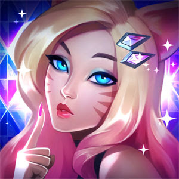

 Após chegar ao estrelato como uma estrela do pop adolescente, Ahri deixou de lado sua aparência jovial e paparicada para revelar uma celebridade da alta moda, elegante e estonteante. Seu novo visual atrai os melhores designers de moda da atualidade. Durante as Fashion Weeks, ela abençoa as passarelas do mundo em trajes finíssimos. É o rosto da FOXY Cosmetics e lançou a própria fragrância, Encanto, ano passado. Quando não está com a K/DA ou praticando, ela faz compras, toma chá com designers e experimenta novos produtos de beleza.